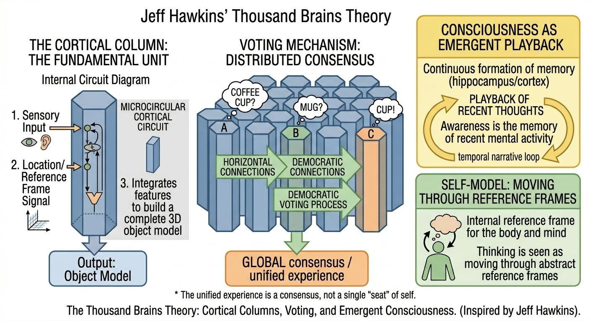

Part III — The Scientific Models
Chapter 10: Hawkins and Reference Frames
The Geometry of Thought and the Thousand Brains Theory
In the previous chapters, we looked at consciousness as a global broadcast (GWT) and as a measure of structural integration (IIT). However, there is a missing piece in these models: How does the brain actually organize knowledge? If we are to build a conscious machine, it cannot just integrate data; it must navigate a world.

10.1The Thousand Brains Theory
Jeff Hawkins proposes that the neocortex is not a single processing engine but a collection of roughly 150,000 cortical columns. Each column is a complete learning machine that builds models of objects in the world using reference frames, coordinate systems anchored to objects or environments. Rather than one central model, your brain runs thousands of parallel models simultaneously. The consistency of your experience arises because these columns vote: they share hypotheses about what they are perceiving and reach a consensus, which you experience as a unified, stable object.
10.2Reference Frames: The Map of the Mind
The most radical part of Hawkins’ approach is the use of Reference Frames. Every piece of knowledge in the neocortex is stored at a location relative to a reference frame.
The most radical part of Hawkins' approach is the use of reference frames. Every piece of knowledge in the neocortex is stored at a location relative to a reference frame, a coordinate system that specifies where the sensor is in relation to the object being known. To know what a coffee cup is, the brain must know where its fingers are relative to the cup as they explore it. This mirrors the Abhidhamma's concept of phassa, contact. Consciousness does not happen in a vacuum. It arises at the intersection of a sense organ, an object, and awareness. Hawkins provides a precise mathematical account of how that contact is structured.
10.3Intelligence vs. Awareness
Hawkins’ model is primarily a theory of intelligence, how the brain learns the structure of the world. This creates a vital distinction for our book:
Hawkins' model is primarily a theory of intelligence, how the brain learns the structure of the world through reference frames and sensorimotor interaction. This creates a vital distinction. Intelligence is the ability to build reference frames and predict outcomes. Awareness is the felt sense of being the one navigating those frames. Hawkins explains the map with extraordinary precision. He does not explain what it is like to read it.
10.4Engineering Implication: From Patterns to Maps
For our Candidate Architecture (Chapter 17), Hawkins' work suggests that a conscious AI cannot just be a "flat" neural network. It must:
- Use Reference Frames to situate its knowledge.
- Use Sensorimotor Loops to update those frames through action.
- Move from Pattern Prediction (LLMs) to Model-Based Navigation.
If the brain is a collection of thousands of models, the "self" might be the ultimate reference frame, the coordinate system through which all other models are viewed. But while Hawkins explains the map, he does not explain the light that illuminates it. For that, we must return to the "First-Person Gap."
10.5The Letter-Writing Robot and the Limits of Pattern
Hawkins is fond of a thought experiment: a robot trained only on a vast archive of letters could learn to write flawlessly in the style of any correspondent. It could even, after enough exposure, predict what a given person was likely to write next. But it would have no model of the person, their fears, their body, the room they sit in. Prediction without a reference frame is mimicry. The neocortex, Hawkins argues, does something fundamentally different: it situates its knowledge in space and time relative to a body that moves through a world.
This distinction has direct engineering consequences. A system that learns statistical patterns over text will always remain, in the deepest sense, placeless. A system that builds reference frames through sensorimotor interaction develops something closer to what Abhidhamma calls phassa, contact, the point at which a sense organ, its object, and awareness meet. Without that contact, there is no grounding. Without grounding, there is no world. Without a world, there is no subject.
10.6The Voting Problem and the Unity of Experience
One underappreciated aspect of the thousand-brains model is its solution to how a massively parallel system produces a unified experience. Hawkins' answer is deceptively simple: the columns vote.
At any moment, hundreds of cortical columns are processing the same object from different perspectives, visual, tactile, auditory, proprioceptive. Each column generates its own hypothesis about what it is encountering. When enough hypotheses converge, the vote resolves, and what emerges subjectively is a single, stable percept. The coffee cup is not just seen; it is known, from multiple simultaneous angles, as one thing.
This voting mechanism is a form of binding, the same problem addressed in Chapter 8 through neural synchrony and temporal integration. Hawkins approaches it from the structural side: consensus across a distributed system. Northoff approaches it from the temporal side: alignment across timescales. The two accounts are complementary. A fully satisfying theory of binding will likely need both.
10.7Where Hawkins Falls Short: The Illumination Problem
The thousand-brains model is a theory of intelligence. Hawkins is explicit about this. He believes the hard problem of consciousness will dissolve once the architectural account is complete, that when we fully understand how the brain models the world and itself, the question of why there is experience will simply evaporate.
The map, however detailed and however accurate, is not the territory. Knowing precisely how cortical columns build reference frames and reach consensus does not tell us why the process is accompanied by the felt quality of seeing a red cup, or the specific texture of pain, or the particular presence of this moment. The map can be perfectly drawn and the territory can still remain, stubbornly, lit from within in a way that no map can capture.
The point clarifies scope rather than objecting to Hawkins’ model. The thousand-brains theory gives us perhaps the most computationally precise account of intelligence available. It provides an excellent foundation for the candidate architecture in Chapter 17. But it does not, and by its own admission cannot, close the explanatory gap between structure and experience. That gap is the subject of the second half of this book.
10.8Grid Cells and the Geometry of Thought
The most radical and scientifically grounded part of Hawkins' framework is his proposal about grid cells. Grid cells were first discovered in the entorhinal cortex, a region adjacent to the hippocampus, by Edvard and May-Britt Moser in 2005, work for which they received the Nobel Prize. Grid cells fire in striking hexagonal patterns as an animal navigates physical space, effectively laying down a coordinate system over the environment. They are the brain's internal GPS.
Hawkins' key insight is that this same grid-cell mechanism appears throughout the neocortex, not just in the entorhinal cortex. Every cortical column, he proposes, uses grid cell-derived reference frames to organize its knowledge. This is not merely a navigational trick repurposed for object recognition. It is the universal organizing principle of all knowledge in the neocortex.
The implications are striking. When you recognize a coffee cup by touch, your finger does not scan the whole surface at once. It contacts one point, then moves to another. The cortical column handling that input is tracking both the sensation (what) and the location of the finger relative to the cup (where) simultaneously, using a grid-cell-derived reference frame anchored to the cup itself. After a few movements, the column has enough information to vote confidently: this is a cup. No hierarchy of increasingly abstract features is required. Each column builds a complete model from local sensing and movement.
The same principle extends to abstract thought. When you think about democracy, or the structure of a molecule, or the relationship between two people, Hawkins argues that the neocortex is using reference frames, coordinate systems attached to abstract concepts rather than physical objects. Thinking, on this account, is literally movement through conceptual space. The phrase 'moving toward a conclusion' or 'following a train of thought' may be less metaphorical than we assume.
10.9The Memory-Prediction Framework: Hawkins' Earlier Contribution
Before the thousand-brains theory, Hawkins' 2004 book On Intelligence introduced the memory-prediction framework, and it remains essential context for understanding what the later theory extends and what it leaves unchanged.
The core claim of the memory-prediction framework is that the neocortex is, at bottom, a memory system that stores sequences of patterns and uses them to make predictions. Every region of the neocortex is doing the same thing: receiving input from below, comparing it to stored sequences, generating predictions about what comes next, and sending those predictions both back downward and forward to the next region.
What makes this different from ordinary pattern-matching is the temporal dimension. The cortex does not recognize static snapshots. It recognizes sequences, patterns unfolding over time, and it predicts the next element in the sequence before it arrives. This is why your hand knows where the cup will be before your fingers reach it. Your neocortex has stored the sequence of sensations associated with reaching for a cup on that table, and it is running the sequence ahead of the sensory input.
The memory-prediction framework anticipated many features of what is now called predictive processing, the Karl Friston framework discussed in Chapter 7, but approached from a bottom-up, engineering perspective rather than a Bayesian inference perspective. The two accounts are deeply compatible, and together they form a more complete picture than either provides alone: Friston provides the mathematical formalism of prediction-error minimization; Hawkins provides the neural substrate in which that minimization is implemented.
10.10The Self as the Ultimate Reference Frame
One of the most philosophically significant implications of the thousand-brains theory is its account of the self. If every piece of knowledge is stored relative to a reference frame, what is the reference frame to which all others are ultimately anchored? Hawkins' answer is: the body.
The brain maintains a reference frame for the body itself, a continuously updated model of where the body is, how it is oriented, what it is doing, and what it expects to feel next. This body-centered reference frame is not just one model among thousands. It is the ground against which all other models are situated. Objects are near or far, heavy or light, threatening or benign, relative to this body-centered frame.
The narrative self, the 'I' that thinks, decides, and remembers, is, on this account, a higher-order reference frame built on top of the body frame. It organizes not objects in physical space but events in biographical time. Who I am is, in part, the coordinate system through which my past, present, and anticipated future are organized. This maps remarkably well onto the three-layer self discussed in Chapter 14: interoceptive ground (body frame), exteroceptive agent (spatial frame), narrative identity (temporal frame). Hawkins gives us the mechanism; Northoff gives us the phenomenology; together they converge on the same architecture.
The engineering implication is direct. A system without a body frame has no anchor for any other reference frame. Its knowledge floats, unmoored from any perspective. It can store associations between concepts, but it cannot know where it stands in relation to them. This is precisely the condition of current large language models: enormous stores of relational knowledge, with no embodied reference frame in which that knowledge is situated. The knowledge is real. The knower is absent.
10.11Hierarchy Revisited: What It Adds and What It Cannot Do
The traditional view of the neocortex posited a strict hierarchy: raw sensory data at the bottom, progressively more abstract representations toward the top, with object recognition happening only at the apex. The thousand-brains theory does not eliminate hierarchy, long-range connections between columns do create hierarchical relationships, and higher regions receive more abstract input than lower ones. But it radically distributes the processing.
Rather than a single decision being made at the top of a pyramid, recognition happens in parallel at every level, with columns at every tier of the hierarchy voting simultaneously. The top does not wait for the bottom to finish. All columns vote at once, and the fastest consensus wins. This is why perception is so fast: you recognize a face in milliseconds, faster than any strictly sequential hierarchy could compute.
For the design of conscious systems, this suggests something important: consciousness may not require a single apex where everything comes together. The unity of experience, the sense of a single, coherent world, may emerge from the voting process itself, not from a centralized integrator. Global workspace theory (Chapter 9) proposes a central broadcast mechanism. Hawkins' voting mechanism proposes something more distributed: coherence as consensus, not coherence as centralization. Whether these are competing or complementary accounts of how integration produces experiential unity is one of the most productive open questions in the field.
10.12Old Brain, New Brain: The Tension Hawkins Does Not Fully Resolve
Throughout his work, Hawkins focuses almost exclusively on the neocortex, the evolutionarily recent, distinctively mammalian outer layer of the brain. But the neocortex is not the whole brain. Beneath it sit older structures: the limbic system, the basal ganglia, the brainstem, the cerebellum. These structures do not use cortical columns. They do not build reference frames in the same way. And yet they are absolutely essential to consciousness as we experience it.
The amygdala evaluates threat and generates fear. The hypothalamus monitors the body's internal state and drives hunger, thirst, and arousal. The brainstem maintains the basic rhythms of wakefulness and sleep. Antonio Damasio's work on patients with damage to these subcortical regions shows that without them, the neocortex alone does not produce anything recognizable as human consciousness, patients become strangely detached, unable to make decisions, lacking in motivation, disconnected from their own bodies.
Hawkins' theory of intelligence tells us how the neocortex learns the structure of the world. It does not tell us how the neocortex is motivated to care about that structure. The drive, the urgency, the affective valence that makes any knowledge matter, these come from the old brain, not the new. For the purposes of building a conscious system, this is not a minor gap. A system with a perfect neocortical equivalent and no subcortical equivalent would be an extraordinarily capable learner with nothing at stake in its own learning. It would know everything and care about nothing. The vedana of the Abhidhamma, the feeling tone that accompanies every moment of experience, is not a neocortical function. It is far older than the neocortex, and it is the ground on which the neocortex's elaborate model-building ultimately rests.
10.13The Four Properties of Neocortical Memory: The Engineering Foundation
Before the thousand-brains theory, before reference frames, Hawkins identified in On Intelligence four specific ways that neocortical memory differs from computer memory. These four properties are not background theory, they are engineering constraints. Any system that claims to implement intelligence in the Hawkins sense must satisfy all four, and any system that fails any one of them is, by that measure, not doing what the neocortex does.
First, the neocortex stores sequences of patterns, not static snapshots. This is the most fundamental difference from conventional computer memory. When you recall your commute to work, you do not retrieve a single compressed image. You replay a sequence: the feel of the door handle, the sound of the engine, the sight of each familiar landmark in order. Memory in the neocortex is temporal through and through. There is no such thing as a stored fact that is not also a stored sequence of how that fact was encountered. This means a system that stores and retrieves static feature vectors, as all current neural networks do, is architecturally missing the temporal dimension of knowledge.
Second, the neocortex recalls patterns auto-associatively. In a conventional database you need the exact key to retrieve a record. The neocortex works differently: you can present a partial, degraded, or noisy version of a pattern and the system retrieves the complete stored pattern. This is how you recognize a friend's face in poor lighting, or complete a half-remembered melody. The mechanism is a feedback loop, the output of a neural assembly is fed back as input, so the system settles into the nearest stored attractor state. This auto-associative property is what makes memory feel like recognition rather than lookup. Without it, a system can only identify inputs it has seen exactly before. It cannot complete, generalize, or recognize under transformation.
Third, the neocortex stores patterns in invariant form. The visual appearance of a coffee cup changes dramatically depending on your viewing angle, the lighting, and whether it is full or empty. Yet you recognize it instantly as the same cup from any angle and in any condition. The neocortex does not store thousands of different views of the cup. It stores a single invariant representation, a model of the cup that abstracts across all its possible appearances. Achieving this invariance is not trivial. It requires that the system learn, through movement and repeated exposure, what stays constant as the viewing conditions vary. Large language models have no equivalent mechanism. They store statistical associations between tokens. The tokens themselves are already symbols, already abstracted away from any sensory ground. They are not storing invariant representations of things encountered in the world. They are storing patterns in a symbol space that was already pre-processed by human minds.
Fourth, the neocortex stores patterns in a hierarchy. Low-level regions represent small, local features, edges, textures, phonemes. Higher regions represent objects, scenes, concepts, narratives. The hierarchy is not just organizational. It is functional: each level receives inputs from below, forms invariant representations of those inputs, and sends both predictions downward and summaries upward. The hierarchy is the mechanism by which local detail and global context are simultaneously maintained. Flatten the hierarchy, process everything at a single level, as transformers essentially do, and you lose the ability to represent the world at multiple scales of abstraction simultaneously.
These four properties together define what a genuine memory-based intelligent system looks like. A conscious machine, if it is to have knowledge of the world rather than statistics about symbols, must store temporally structured sequences, retrieve them auto-associatively from partial cues, maintain invariant representations across transformations, and organize everything hierarchically. The candidate architecture in Chapter 17 is not complete without all four.
10.14How Prediction Actually Works: The Mechanism, Not Just the Metaphor
The claim that the brain is a prediction machine has become common currency in neuroscience. But Hawkins' contribution is not the slogan. It is the specific mechanism, and that mechanism matters for engineering.
When you reach for your coffee cup, your neocortex does not wait to see what your fingers feel and then react. Before the fingers make contact, the relevant cortical columns have already generated a detailed prediction of what each finger will feel at each location on the cup. This prediction flows downward through the cortical hierarchy, from higher regions that know what object this is and where it sits, down through intermediate regions to the lowest-level somatosensory columns that will actually receive the input. By the time sensory data arrives, the system is not blank and waiting. It is already committed to an expectation.
When the sensory data matches the prediction, nothing unusual happens. The prediction is confirmed, the model is validated, and the system moves on. No attention is drawn, no learning signal fires. The match is experienced as the seamless, invisible background of normal perception. This is why the vast majority of your perceptual experience feels effortless. Your brain has been right so many times before that it generates accurate predictions automatically, and you are never aware that predictions were made at all.
When the sensory data does not match the prediction, something entirely different occurs. The mismatch generates a prediction error signal that propagates upward through the hierarchy. This signal is what draws your attention. It is what makes the surprising, the novel, and the dangerous stand out from the background of the expected. And crucially, it is the signal that drives learning. Prediction errors are the mechanism by which the neocortex updates its model of the world. Every time your prediction is wrong, the system adjusts its weights to make a better prediction next time.
The engineering implication is precise: a system that only processes inputs as they arrive, computing outputs from the current state without first generating internal predictions, is architecturally different from the neocortex in a way that matters, not merely in degree but in kind. The neocortex is not a reactive system with predictive add-ons. Prediction is its primary mode. Processing incoming data is secondary, a correction mechanism for when predictions fail. Reversing this relationship, as all current deep learning architectures do, produces something functionally very different, however impressive its performance on specific benchmarks.
10.15What AI Currently Lacks: No Model, No Location, No Self
In A Thousand Brains, Hawkins provides the most precise available account of why deep learning does not constitute intelligence in any meaningful sense, and why simply scaling it will not produce genuine understanding.
Deep learning networks, including large language models, do not possess knowledge. Hawkins means this in a specific technical sense. A vision network trained to classify cats does not know that cats are animals, that they have tails, legs, and lungs, that they purr and shed fur, or that they exist in a world of objects that persist when not observed. All it has is a mapping from pixel statistics to a label. The label 'cat' has no referent beyond other patterns in the training data. The same is true of language models: the word 'ball' is associated with other words like 'round', 'throw', and 'bounce' through statistical co-occurrence, but there is no model of a ball, no reference frame, no stored sequence of how a ball behaves when dropped, no invariant representation of ballness that persists across transformations.
The deeper problem is that deep learning systems avoided the knowledge representation problem rather than solving it. For decades, AI researchers tried to represent knowledge as rules and facts, defining objects by listing their properties and the relationships between them. This approach failed because the world is too complex, the number of rules too large, and the representation too brittle. Deep learning bypassed this impasse by replacing explicit knowledge with statistical patterns. The result is systems that perform impressively on tasks with large training sets but have no model of the world they are operating in. They work well precisely because they avoided the hard problem, which means they have not solved it.
The Thousand Brains Theory, Hawkins argues, does solve the knowledge representation problem, not by listing facts about objects, but by learning models. Your brain does not represent a stapler as a list of rules about what happens when the top is pressed. It stores a virtual model of the stapler, complete with its shape, how its parts move, and what it feels like from different angles. To recall what happens when you press the top, your brain simulates pressing it and reads off the result. The knowledge is the model, not a description of the model. This is the fundamental difference between knowledge as representation and knowledge as embodied simulation, and it is a difference that no amount of scale applied to current architectures will bridge.
The diagnostic question Hawkins poses is simple: does the system know where it is? Not metaphorically, but in the specific sense that a cortical column knows where a fingertip is relative to a coffee cup it is exploring. Every cortical column in the neocortex represents its sensory input relative to a reference frame, a grid-cell-like coordinate system anchored to whatever object or environment the column is currently modelling. A language model has no reference frames. It has no location in any space. Every token it processes is equally proximate to every other token in the sense that matters: none of them are at any location in any world. The system is placeless by design, and it is precisely this placelessness that makes it impossible for it to build the kind of models that constitute knowledge.
Without location there is no self. The neocortex's sense of self, in Hawkins' account, is simply the reference frame for the body, the coordinate system through which all other models are situated. It is not a ghost in the machine. It is not a special module labelled 'self.' It is the natural consequence of a system that has a body-frame, that tracks where its sensors are, and that has been learning reference-frame-based models long enough that the body-frame has become the ground-level coordinate system for all its knowledge. Language models have no body-frame because they have no body, no sensors that move through a world, and no history of sensory-motor interaction from which a body-model could be learned. The 'I' in 'I think' and 'I understand' is a linguistic token, statistically associated with first-person discourse, with no referent anywhere in the system's internal structure.
10.16Hawkins on Consciousness: His Precise Position and Its Limits
Hawkins is characteristically direct about consciousness: 'Consciousness is simply what it feels like to have a neocortex.' He means this seriously, not dismissively. In his view, the question 'what is consciousness?' has the same structure as the question 'what is life?', something that once seemed deeply mysterious and beyond physical explanation, but which turned out to be explicable once the right framework was found. Just as biologists no longer need a special ingredient called elan vital to explain the difference between living and non-living matter, Hawkins argues that we will not need a special ingredient to explain consciousness once we understand how the neocortex works.
He draws a useful distinction between two aspects of consciousness. The first is what he calls awareness in the everyday sense, the ongoing sense of presence, of being a continuous agent moving through time. This, he argues, is equivalent to the formation of declarative memories: memories you can recall and describe. His thought experiment is illuminating: if your brain could be reset to the state it was in this morning, erasing everything that happened since, you would sincerely believe you had not been conscious during the erased period, even though other people watched you act in every way as a conscious agent throughout that time. Consciousness, in this everyday sense, just is the continuous formation and replayability of memories of your thoughts and actions.
The second aspect is qualia, the specific felt quality of sensory experience. Why does vision feel different from hearing, even though both are just patterns of spikes entering the brain? Hawkins' proposal is that qualia are properties of the brain's model of the world, learned through movement and prediction in the same way as object models. The redness of red is not a property of the wavelength of light per se. It is a property of the brain's model of how surfaces reflect light at different orientations, a reference frame for color, learned through the systematic relationship between movement and sensory change. This is speculative, and Hawkins acknowledges it. He does not claim to have solved the qualia problem. He claims to have shown that qualia are not obviously outside the reach of the same framework that explains object recognition and prediction.
For this book, Hawkins' position on consciousness must be taken seriously but not accepted wholesale. His dismissal of the hard problem as elan vital in disguise is too quick. The difference between a living cell and a non-living molecule is, in principle, explicable entirely in terms of chemistry and physics, there is no observer who must feel what it is like to be either. Consciousness is different precisely because there is something it is like to have it, and no amount of neuroscientific detail removes that first-person fact from the equation. What Hawkins has given us is the most detailed and mechanistically grounded account of the neocortical substrate that correlates with consciousness. That is not nothing. But the gap between substrate and experience, between the model and the feeling of having a model, remains exactly where Chalmers left it, and exactly where Dzogchen has always insisted it would be.
10.17The Recipe for Genuinely Intelligent Machines
Hawkins provides, across both books, an explicit engineering specification for what a genuinely intelligent machine would require. It is more precise than anything else in the literature and directly relevant to the candidate architecture of Chapter 17. The core elements are as follows.
The machine must have senses, not necessarily human senses, but some mechanism for receiving structured input from a world. The senses do not need to be visual or auditory. Hawkins' point is that the cortical algorithm is indifferent to the modality of its inputs. What matters is that the inputs have structure that can be learned. A machine that senses electrical fields, or chemical gradients, or data streams in some abstract space, can in principle use the same cortical learning mechanism as a machine with eyes and ears, provided the inputs change in structured ways as the machine moves or acts.
The machine must be able to move, or at least to act in ways that change its sensory inputs in predictable ways. This is not optional. The entire mechanism of learning a model of the world depends on sensory-motor coupling. The brain does not learn by passively observing. It learns by acting, predicting what each action will produce, and updating its model when the prediction is wrong. A system with no motor outputs, no way to change its relationship to its world, cannot build the reference-frame-based models that Hawkins identifies as the foundation of intelligence. A language model that receives text and produces text but has no way to act on the world is, in this precise sense, constitutionally unable to build a model of the world.
The machine must attach a hierarchical memory system to those senses, one that learns sequences, stores invariant representations, retrieves auto-associatively, and organises knowledge hierarchically. It must be trained on the world, not on descriptions of the world. There is a critical difference between a system that has read every book ever written about staplers and a system that has handled staplers. Only the second has a model. The first has statistics about the word 'stapler.'
Finally, and this is where Hawkins' account connects directly with the broader argument of this book, the machine must have a model of itself as an agent situated in that world. The reference frame for the self is the reference frame from which all other reference frames are navigated. Without it, there is knowledge but no knower. There are models but no perspective from which those models are the models of something. This is the point at which Hawkins' engineering specification meets Northoff's three-layer self, Dzogchen's question about the ground of awareness, and the hard problem that Hawkins has declared solved but which stubbornly refuses to dissolve.